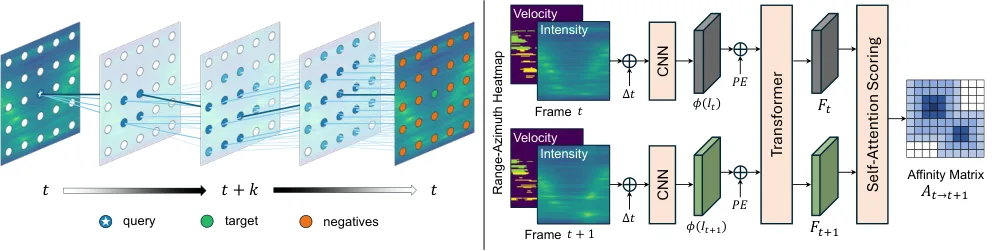
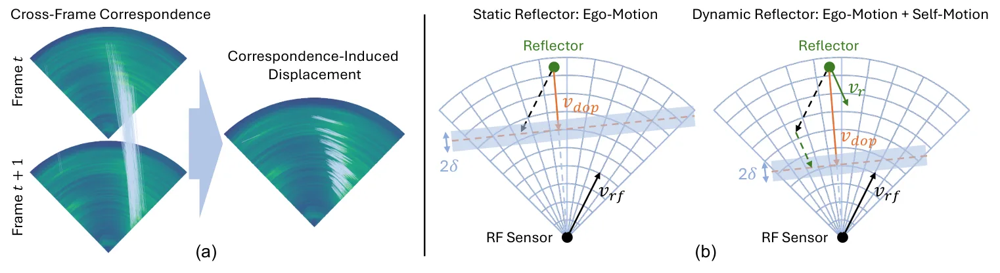
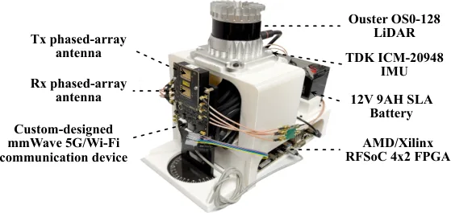
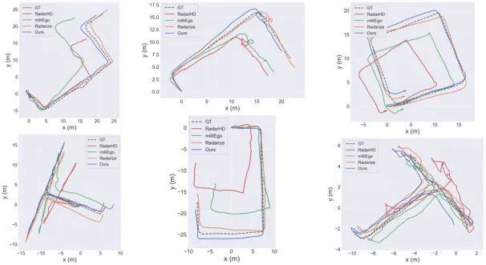
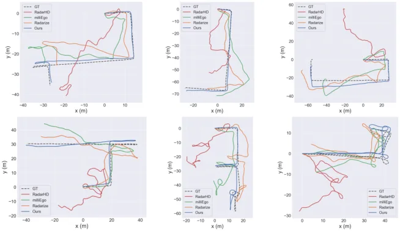

RFWalk：用多普勒一致性把自监督 RF 帧间对应约束成物理可行
Self-Supervised Doppler-Guided RF Odometry
把“多普勒”从测速传感器改造成对应关系的局部物理校验：每条 RA 单元的软对应必须先满足 u^T δ ≈ −Δt·v_dop（容差带 0.02 m），再做置信度加权 Huber 配准。Radarize 静态 ATE 1.934 m（有监督基线 1.657 m），自建 60 GHz 动态场景 2.357 m vs 5.642 m（−58%），且动态从低到高误差只涨 0.93 m。消融显示随机相位偏移贡献最大（23.02→5.83 m），多普勒项主要救旋转（4.23°→2.49°）。
ATE reduction in dynamic scenes
ATE growth across dynamics
ATE with phase shift
rotation ATE gain
作者、单位与技术谱系 · Research context
作者与单位
研究脉络
- CRW：Space-time correspondence as a contrastive random walk（Jabri et al., NeurIPS 2020）方法基座关系：本文的 palindrome 训练目标（前向走 k 步再反向走回、要求回到起点）直接沿用 CRW 的循环一致性形式，只是反向序列时把多普勒通道取负。[论文 §2.2 与参考文献 [16]]
- GMRW：Self-supervised any-point tracking by contrastive random walks（Shrivastava & Owens, ECCV 2024）方法上游关系：帧间转移概率的定义方式与“全局匹配 transformer + CNN 编码器”的架构取自 GMRW，本文把输入从 RGB 换成 RA 双通道张量。[论文 §2.2 与参考文献 [30]]
- Radarize（Sie et al., MobiSys 2024）评测与对照上游关系：本文在 Radarize 公开数据集与其评测协议上训练/评测，并把 Radarize 方法作为最强有监督基线；作者同时指出该方法把多普勒当作自运动测量、隐含“反射体静止”假设，本文正是要绕开这个假设。[论文 §3.1、§4.2 与参考文献 [32]]
合作网络
- 密歇根州立大学 RF 感知组Michigan State University（Huacheng Zeng 组） → RFWalk关系：共同署名[论文首页署名]
- Radarize 数据集Radarize（Sie, Wu, Guo, Vasisht） → RFWalk关系：公开数据与评测协议依赖[论文 §3.1 与参考文献 [32]]
作者与单位来自论文首页署名块；三条脉络均可回指正文的具体句子与参考文献编号。团队之外只记录一条数据依赖边（Radarize），未发现与本文作者的其他公开合作或师生关系证据，因此不做推断。
方法本质拆解 · What actually changed
是不是微调？
不是微调，也不需要任何位姿标签：对应网络在无标注 RF 序列上从零自监督训练，监督信号完全来自循环一致性、多普勒一致性与组复合一致性三项自监督损失，训练时不需要真值轨迹或同址 LiDAR。
有没有额外约束？
有两类硬约束。第一是多普勒一致性：每条 RA 单元的一步对应位移在视线方向的投影必须落在 −Δt·v_dop ± 0.02 m 的容差带内，带外才惩罚。第二是组复合一致性：多步复合转移与端点直接转移之间用行级对称 KL 拉近，抑制“局部可行但互相矛盾”的转移累积成漂移。
推理/后端到底做了什么？
后端不做 argmax 离散匹配，而是对每个源单元的转移分布取期望得到软目标位置与协方差，再按响应强度、分布集中度与熵算权重，最后用 Huber M 估计（IRLS 闭式解）拟合 SE(2)，让行人等独立运动目标的对应自然成为大残差外点。
方法本质是什么？
本质是把“匹配是否物理可行”从不可观测的语义判断，变成一个可微的几何残差：径向速度提供了与外观无关的第二把尺子，使循环一致性无法再被“互相抵消的错误对应”满足。效果是免监督地获得对动目标与多径的鲁棒性，代价是需要雷达能输出逐单元的径向速度图，且只覆盖平面运动。
输入双通道 RA 帧（功率 + 径向速度），把帧间对应写成随机游走并用多普勒一致性约束到物理可行，再用置信度加权 Huber 配准输出 SE(2)；不改雷达硬件、不用标签，直接效果是动态场景 ATE 降 58%。

结论与问题Conclusion & Motivation
核心结论
RF 里程计的瓶颈不是“有没有运动线索”，而是“帧间对应不可信”：RA 热图角度分辨率粗、多径导致结构漂移，纯循环一致性允许“互相补偿的错误匹配”通过。RFWalk 的结论是，把雷达自测的径向速度写成对每条对应位移的一阶约束，就能把可行对应集从“循环一致”收紧到“物理可行”，从而在完全没有位姿标签的前提下逼近有监督方法。在动态场景里这个约束的价值更大：它不要求先把行人分割出来，而是让动目标对应在鲁棒配准里自然变成大残差外点。
动机与问题
相机和 LiDAR 在黑暗、烟雾、粉尘下会显著退化，毫米波雷达便宜、体积小且对光照与悬浮物鲁棒，因此 RF 里程计/SLAM 近年被反复尝试。但已有路线各有缺口：扫描匹配（ICP/NDT）受多径与角度分辨率限制；雷达-惯性融合要额外传感器、标定与同步；多普勒方法通常假设“大多数反射体静止”，把行人速度混进自运动；学习类方法（RadarHD、Radarize）则要真值轨迹或同址 LiDAR 监督。作者要回答的问题是：能不能只用 RF、只用无标注序列，学到“物理上说得通”的帧间对应。
方法Method
方法总览
输入是双通道 RA 张量（对数功率图 + 有符号径向速度图），CNN 编码器加全局匹配 transformer 输出每个 RA 单元的嵌入，经 softmax 得到帧间转移矩阵 A。训练沿用 CRW 的 palindrome 方案：前向走 k 步再反向走回，要求随机游走者回到起点（行级交叉熵）；反向序列要把多普勒通道取负，因为时间反演会翻转径向速度。为避免“直接复制 RA 索引”的退化解，训练时对二维正弦位置编码做随机平移。在此之上加两项：多普勒一致性（对一步转移矩阵施加局部物理约束）与组复合一致性（多步复合转移与直接转移的行级对称 KL）。推理时对每个单元的对应分布取期望得软对应与协方差，按“响应强度 × 分布集中度 × 熵”加权，用 Huber M 估计解 SE(2)。
关键技术细节
多普勒约束的推导是本文的核心：u_i 是单元 i 的视线单位向量，δ_i = Σ_j A(i,j)p_j − p_i 是对应诱导位移，一阶关系要求 u_i^T δ_i ≈ −Δt·v_i^dop；等式过严（RA 离散化 + 有限 Δt 的一阶近似），于是设容差带 δ=0.02 m，只惩罚带外偏差，并用数据相关权重 q_i 压低不可靠的多普勒测量。配准权重写成 w̄_i = m_i·exp(−β·tr(Σ_i))·(1 − H(A_i)/log N)，β=5.0，Huber 阈值 c=0.1 m。对应网络 d=128、4 层 8 头 transformer、τ=√d；训练用 K={1,2,3}、G={2,3}，λ_rw=1.0、λ_dop=0.5、λ_gc=0.2，四张 RTX A6000。

实验Experiments
实验设置
评测用两个差异很大的数据集：Radarize（TI IWR1843 单芯片，76–81 GHz，3 发 4 收，最大量程 4.284 m，距离分辨率 4 cm，30 Hz，146 条轨迹、4 栋楼、约 4.7 km）与作者自建的 RFWalk 数据集（60 GHz 单站 ISAC 平台，带宽 1.2288 GHz、距离分辨率约 12 cm、16 发 16 收相控阵、10 Hz，80 条轨迹、3.2 km，含行人）。指标是 ATE 与 RE 的平移（m）与旋转（deg），用 evo 计算。对照五条基线覆盖三大范式：ICP、NDT（免训练）、RadarHD、milliEgo、Radarize（三条学习类基线都用真值位姿监督），全部在同一测试轨迹上评测。
实验数字与比较
Table 1（Radarize 静态）：RFWalk ATE 平移 1.934 m / 旋转 3.191°，Radarize 有监督基线 1.657 m / 2.445°，ICP 8.613 m、NDT 7.421 m、milliEgo 4.732 m；RFWalk 在四条指标上均优于除 Radarize 外的全部基线。Table 1（RFWalk 动态）：RFWalk 2.357 m / 2.607°，Radarize 5.642 m / 4.938°，即平移 ATE 降 58.2%，RE 平移 0.010 vs 0.018。Table 2（按动态程度分组，ATE 平移）：低/中/高动态下 RFWalk 2.285/2.672/3.214 m，Radarize 4.831/6.042/8.813 m，milliEgo 6.812/7.934/9.105 m；从低到高 RFWalk 只涨 0.93 m，有监督基线涨 2.29–8.24 m。Table 3（组大小）：不加 L_gc 时 2.675 m，G={2}→2.402，G={2,3}→2.357（ATE −12%、RE −23%），G={2,3,4} 退化到 2.728 m。
消融/失败边界
累积消融（Fig. 8）给出各组件排序：随机相位偏移贡献最大，ATE 平移 23.02→5.83 m，去掉它就等于允许模型靠复制索引满足循环一致性、转移矩阵塌向单位阵；多普勒项带来最大的旋转收益，ATE 旋转 4.23°→2.49°，同时平移再降 54%；组复合一致性把平移进一步压到 2.36 m。边界上有明确的失败模式：palindrome 长度 K 与有效帧间位移强相关——1 Hz、高速时多步游走会走出可靠对应范围（Fig. 7），而低速时过长的链反而放大对应噪声；组大小扩到 {2,3,4} 时，长时程直接转移本身不可靠，把误差回灌给一步转移，指标全面退化。作者也承认没有单独做“去掉 Huber 鲁棒核”的消融，因此“鲁棒配准贡献多少”与“循环一致性贡献多少”在动目标场景里没有完全拆开。
局限与迁移Limitations & Transfer
局限与待核验
作者明确承认三条限制：全局对应随 RA 单元数 N 呈二次增长；当前只估计平面 SE(2)；每个模型只在单一雷达配置上训练与评测，跨载频/带宽/阵列的零样本迁移未验证。我们读下来还有几项待核验：一是 60 GHz 自建平台与数据集未公开（论文只给平台图与规模），−58% 这个结论的外部可复现性依赖其数据发布；二是静态场景下仍略逊于有监督的 Radarize（1.934 vs 1.657），说明自监督在“对应先验强”的场景并没全面胜出；三是 80 条轨迹按 60/40 随机划分，测试集规模较小，ATE 的方差未报告；四是多普勒约束只在一步转移上施加，超过两步的对应是否仍满足物理一致性没有讨论。
与你研究路线的关系
这篇最可迁移的是“把物理量写成对应层残差”的建模习惯：我们的因子图里也可以加入一条径向速度（或多普勒）一致性因子，作用在“数据关联/对应”这一层，而不是再加一个状态观测，从而在动目标比例高的城市与室内序列里抑制错误关联。第二个可迁移点是置信度加权的构造——用对应分布的迹与熵同时刻画“散”和“糊”，这和我们判断退化（degeneracy）时看的可观测量指标是同一类信号，可以直接拿来做鲁棒核的自适应门限。下一步实验建议：在现有 PPP/INS 或 LiDAR-惯性管线里，固定后端，只替换数据关联层的权重（均匀权重 vs 熵+散度加权 vs 多普勒一致性校验），在同一段含动目标序列上比较 ATE 与内点率的配对差。







